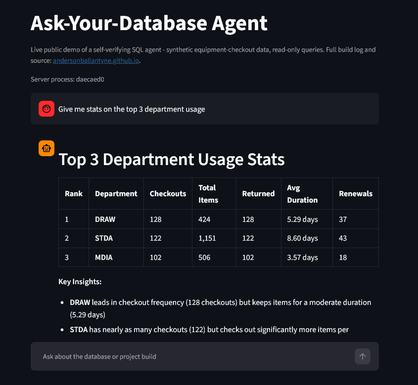

I build reliable data foundations that make AI useful.
The Project is the working example: one Postgres data stack, one hand-built database agent, and seven builds that progressively add retrieval, observability, CI, a conversational interface, and independent verification. The point is not just to make an AI system answer questions — it is to make the system reproducible, constrained, observable, and honest about what its evidence does and does not support.
333 — more Monday checkouts than any other day of the week.
✓ Verified against tool evidenceView app screenshot

The system is a natural-language interface to a real PostgreSQL database. A user asks a question in plain English; the agent selects the appropriate evidence path, generates or runs the necessary query, and answers from the result. The database connection used for normal querying is read-only, while a separate write-scoped role is limited to the agent's scratch workspace.
The finished system runs end-to-end in Docker Compose: a real raw-to-clean data pipeline, PostgreSQL and pgvector, a Streamlit chat interface, persistent conversation memory, structured observability, CI, an evaluation harness, and a second agent that checks tool-backed answers against the evidence gathered for them.
real checkout activity by day of week, from the project's own dataset — Monday, not Friday, is the busiest day
What it does
- Answers questions in plain English by writing and running its own SQL against a real PostgreSQL database, behind a role that can only ever
SELECT. - Finds thematically related results with no exact keyword match, using pgvector semantic search over the underlying data.
- Answers questions about its own build history and status through semantic search over the project's documentation, kept current as the system grows.
- Persists computed results for reuse in a scratch workspace isolated to its own database role and schema, with age-based visibility into what has been left behind and a UI-only path to remove it.
- Runs as a working chat application through a Streamlit front end with persistent, tiered conversation memory and transparency into the tools an answer relied on.
What makes it stand out
- Self-verification. Every tool-backed response is checked by the project's second agent — the Verifier/Critic Agent — against the actual evidence gathered for the response, with a visible verified/unverified result and a plain-English reason. It is a distinct second agent in the stack, not simply another presentation layer for the first agent.
- Full cost observability. Tool calls and API turns are logged; token usage, latency, result size, and errors can be traced so a cost spike can be investigated rather than guessed at.
- Least-privilege data access. Two separate Postgres roles keep reading and writing distinct: one is strictly read-only for querying, while the other is scoped to the agent's scratch schema.
- CI-gated correctness. The full test suite and dedicated evaluation harness run from a clean environment, covering both the main agent's behavior and the verifier's judgment.
- Incident-driven engineering. Real issues have been found through live usage after deployment, then root-caused, fixed, and re-verified against a freshly deployed instance. The incidents are documented rather than hidden behind a polished final result.
- Documentation that stays current. The command reference and project history are maintained as the system grows and are kept aligned with the searchable documentation collection, so the agent's answers about its own system have a maintained source behind them.
Ask-Your-Database: a self-checking SQL agent public repo · Build 7 complete
A complete data-and-agent system: reproducible ingestion, normalized queryable data, semantic retrieval, a hand-built tool-use loop, observability, CI, a Streamlit interface, persistent memory, and an independent verifier that checks tool-backed answers before they are surfaced.
Ask-Your-Database agent
The foundation: a hand-built tool-use loop, no agent framework, that turns plain-English questions into SQL and runs them through a dedicated read-only database role. Tool-call caps and API-error handling keep the loop bounded.
Raw-to-queryable pipeline + scratch workspace
A real equipment-allocation export moves through raw staging into typed, clean Postgres data. Build 2.5 adds a separate database role and scratch schema where the agent can save derived results, without giving it broader write access to the database.
Retrieval-augmented agent + docs RAG
pgvector adds semantic search over equipment summaries, then over the project's own documentation. Semantic search is limited to results that meet a relevance threshold, while questions that require a complete or current list are routed to direct SQL rather than relying on a handful of similarity matches.
Observability & eval harness
Structured logging, end-to-end evaluation against the live agent, and a history of system metrics make tool use, latency, errors, and regressions measurable instead of anecdotal.
Reproducible deployment with CI
GitHub Actions builds the schema, pipeline, and tests from a clean environment. The build also exposed reproducibility and data-governance problems, including a mid-project anonymization pivot and credential-history cleanup.
Conversational front end
Streamlit turns the agent into a usable application. Persistent chat history, hybrid tiered memory, and a visible tools-used trace make the conversation durable and inspectable — while later incident work hardened the model’s memory against history compounding.
Verifier / critic agent
A second agent — the Verifier/Critic Agent — checks every response from the primary agent against the tool evidence gathered for it. The result is surfaced as a clear verified/unverified status, with the Verifier/Critic Agent's reasoning available rather than hidden.
The 177,090-token question: fix the data, not the prompt
The most important failure in the project began as a prompt problem and ended as a data-model problem. Normalizing checkout items cut the original question from 177,090 to 8,024 tokens and fixed the answer at the same time.
When CI is green but the app is still old
fresh processes · long-running service · container recreateSupported by the evidence — but was the evidence complete?
truncation · verifier scope · extraction pipelineTwo prompt fixes that didn't work — and the one that did
verdict enum · prose vs. schema · public demoWhen "anonymized" isn't
git-history purge · CI fixture · data exposureFull build log — seven builds, the incidents that changed the design, and the decisions that closed them → writing
I work at the seam between data infrastructure and AI tooling: building systems that can be reproduced, constrained, observed, and improved. The Project is one system rather than seven disconnected demos — the same Postgres foundation and agent are deepened in place as each build adds something the previous version was missing.
// status: core system complete through Build 7 — open to data & AI-augmented engineering roles.
If this looks like how your team works, let's talk.
The fastest way to evaluate the work is the repository and the build log: they show the architecture, the tests, the incidents, and the fixes rather than only the finished interface.
View the repo